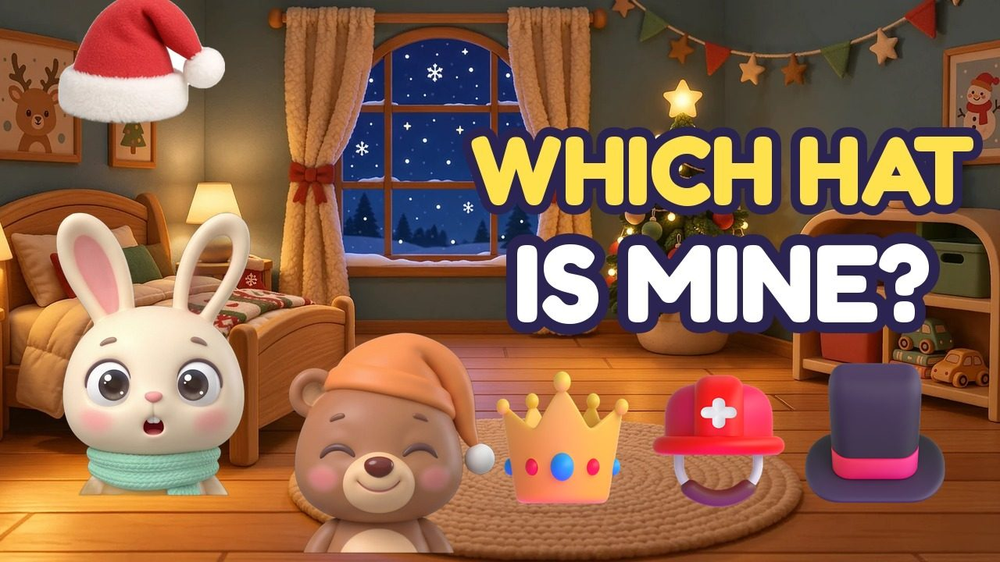
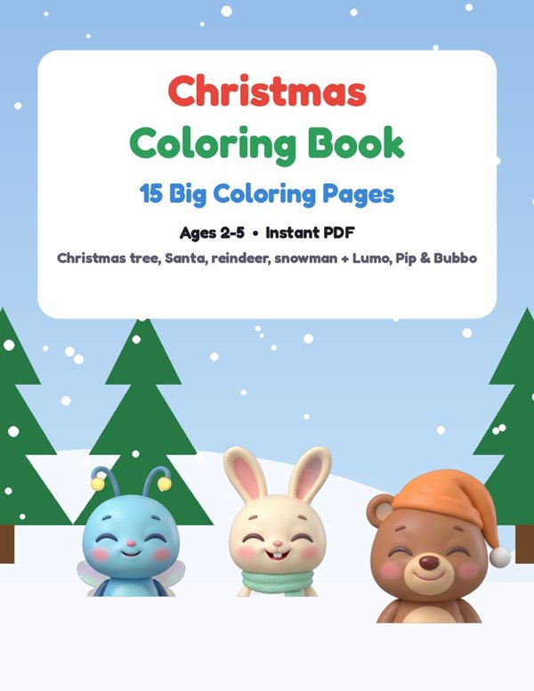
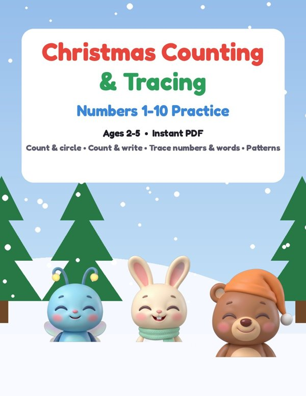
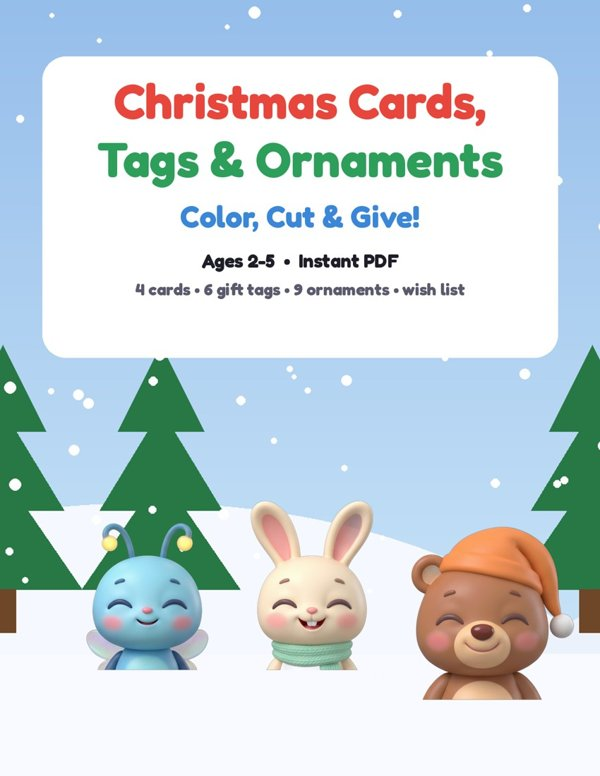

Christmas Songs for Toddlers
Christmas songs for toddlers and preschoolers: decorate the tree, bake cookies for Santa, count the reindeer, wear Christmas pajamas and more. Every song is short, gentle and easy to sing, and every video has a free Christmas coloring page you can print.
Christmas songsChristmas coloring pagesChristmas activitiesAnimal songsLearning songsVehicle songsHealthy habits

Who Drives This Car?
Who drives this car (jobs game), Car sounds song
Who drives this car (jobs game), Car sounds song

Which Hat Is Mine?
Who wears this hat (jobs game), Hat colors song
Who wears this hat (jobs game), Hat colors song

Decorate the Christmas Tree
Decorate the tree song, Christmas colors game
Decorate the tree song, Christmas colors game

Who Ate the Cookies?
Christmas baking song, Count the star cookies
Christmas baking song, Count the star cookies

Christmas Pajamas Song
Bedtime routine song, Bedtime guessing game
Bedtime routine song, Bedtime guessing game

Yummy Veggies Song
Yummy veggies song, Guess the vegetable by color
Yummy veggies song, Guess the vegetable by color

Surprise Eggs & Shapes Song
Christmas surprise eggs (colors), Shapes song
Christmas surprise eggs (colors), Shapes song

Christmas Train Song
Christmas train song, Count the train cars
Christmas train song, Count the train cars

Superhero Song
Superhero dress up song, Magic color machine
Superhero dress up song, Magic color machine

Wash Your Hands Song
Wash your hands song, Sink or float game
Wash your hands song, Sink or float game

Reindeer Song
Reindeer freeze dance, Count the carrots
Reindeer freeze dance, Count the carrots

Snow Day Song
Build a snowman, Count the snowballs
Build a snowman, Count the snowballs

Christmas Cookie Song
Bake Christmas cookies, Count and decorate
Bake Christmas cookies, Count and decorate

Christmas Surprise Song
Surprise presents and colors, Christmas shapes
Surprise presents and colors, Christmas shapes

Santa Song
We Wish You a Merry Christmas, Cookies for Santa
We Wish You a Merry Christmas, Cookies for Santa

Christmas Tree Song
Decorate the Christmas tree, Jingle Bells
Decorate the Christmas tree, Jingle Bells
Christmas printables for toddlers

Christmas & Winter Mega Activity Pack (44 pages)
Coloring, counting, tracing, mazes, cards, gift tags and ornaments. Our biggest pack. Use code LUMO40 for 40% off until December 25.
$20 Buy
Coloring, counting, tracing, mazes, cards, gift tags and ornaments. Our biggest pack. Use code LUMO40 for 40% off until December 25.
$20 Buy

Christmas Coloring Book for Toddlers (17 pages)
15 big, simple Christmas coloring pages with thick lines for little hands.
$4 Buy
15 big, simple Christmas coloring pages with thick lines for little hands.
$4 Buy

Christmas Counting & Tracing Worksheets (13 pages)
Count to 10, trace numbers and lines, Christmas style. Great for preschool and pre-K.
$4 Buy
Count to 10, trace numbers and lines, Christmas style. Great for preschool and pre-K.
$4 Buy

Christmas Cards, Gift Tags & Ornaments to Color (7 pages)
Kids color and give their own cards, tags and tree ornaments.
$3 Buy
Kids color and give their own cards, tags and tree ornaments.
$3 Buy